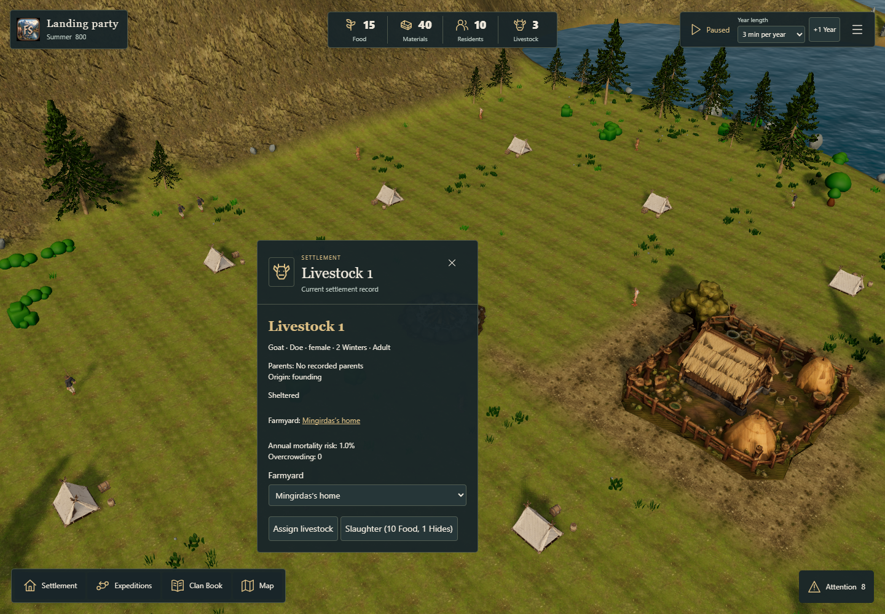
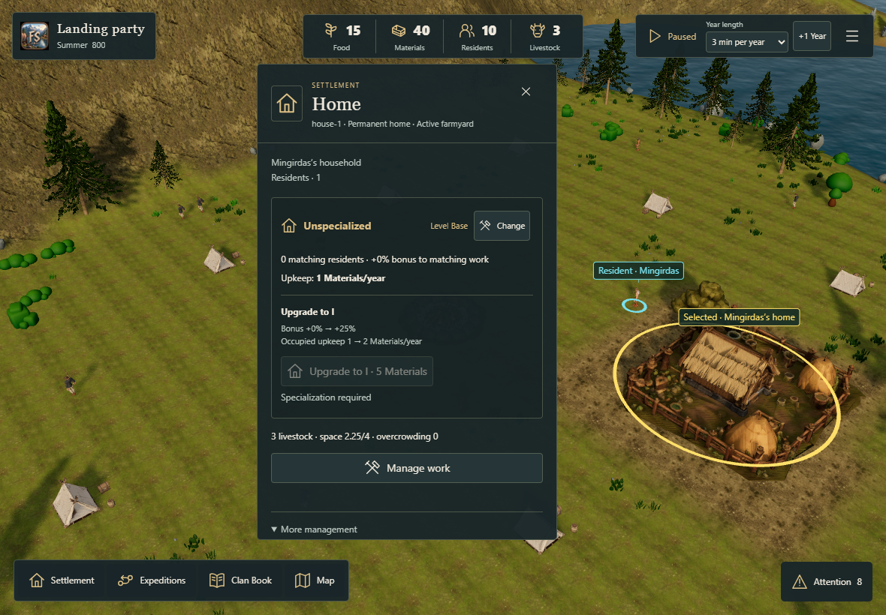
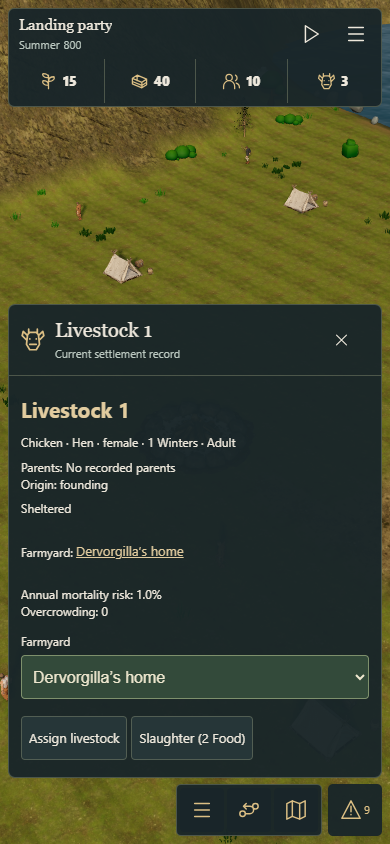

Seeded founding livestock
Explicit #219 balance trial, awaiting owner review. The shipping New campaign flow still starts with cattle. Additional native models belong to #220.
Balance recommendation and validation · Saved rules and methodology · Fjord Play
Same seeds, different founding species
Exactly three adults: two females and one male. The single physical CPU rival receives a different species. No extra Food, purchases or replacement animals are granted.
Loading measurement status…
Final medians and extinction counts include completed runs only. Shortfall counts describe observed cases. Limits and missing cases are reported above; no partial run is treated as a successful full campaign.
The CPU continues autonomously. Its repeated trajectories are deduplicated in the report rather than counted as independent samples. Weather configuration and seed sets match; actual weather rolls can diverge when species change domestic RNG consumption.
Full proposed rules — not activated defaults
Loading proposed rules…
Management on desktop and touch
These roster fixtures use extra Materials to create a Farmyard for inspection. The balance study starts with the real 15 Food and five Materials. Non-cattle animals are not rendered as cows while their native models are being prepared.

Stable identity, actual species and sex, parentage, shelter and exact slaughter receipt.

Headcount and weighted space remain separate. The existing individual roster is available under More management.

Touch controls use the same canonical animals and commands. Poultry does not yield Hides.